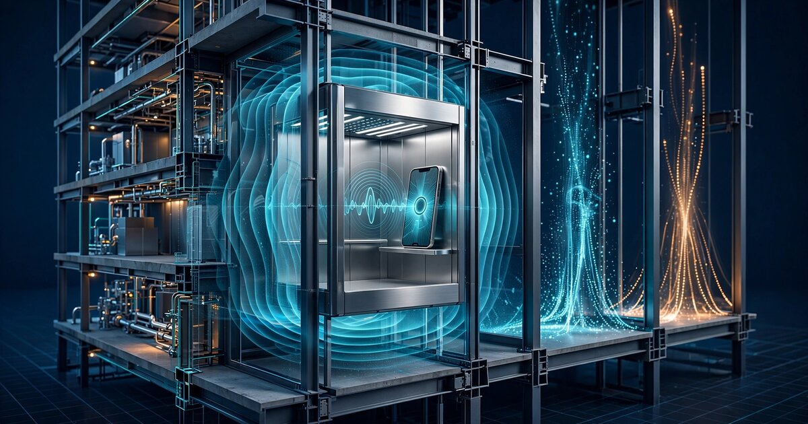

System and Method for Real-Time Elevator Mechanical Health Assessment Using Crowdsourced Smartphone Barometric Pressure Profile Analysis and Fleet-Level Statistical Anomaly Detection

Abstract
Disclosed is a system and method for continuously assessing the mechanical health of passenger elevators by analyzing barometric pressure profiles recorded by smartphones carried by ordinary building occupants. Every modern smartphone contains a barometric pressure sensor (typically a Bosch BMP390 or STMicroelectronics LPS22HH, with a resolution of ±0.01 hPa corresponding to approximately ±0.08 m altitude change) that records continuous pressure data during elevator transit. The characteristic barometric pressure curve of an elevator ride encodes the car's velocity profile, acceleration and deceleration rates, floor-leveling accuracy, inter-floor transit time, and micro-vibration signatures. A cloud aggregation service collects anonymized barometric profiles tagged with building and elevator identifiers derived from Wi-Fi BSSID fingerprints and BLE beacon proximity. Over time, the service constructs statistical baseline profiles for each elevator using a Gaussian process model fitted to thousands of individual ride observations. A multivariate change-point detection algorithm then identifies statistically significant deviations from baseline, including gradual speed degradation (indicative of motor or drive wear), acceleration profile asymmetry (brake pad wear or counterweight imbalance), increased leveling oscillations (controller tuning drift or guide rail misalignment), and inter-floor transit time variance (rope stretch or sheave wear). The system requires no dedicated sensors, no elevator-side hardware installation, and no cooperation from elevator manufacturers or maintenance contractors, creating a building-wide elevator health monitoring network from devices already present in every passenger's pocket.
Field of the Invention
This invention relates to building infrastructure monitoring and predictive maintenance, specifically to methods for detecting mechanical degradation in passenger elevators using passive barometric pressure sensing from consumer smartphones and statistical anomaly detection across large device populations.
Background
The global installed base of passenger elevators exceeds 18 million units, with approximately 1.1 million in the United States alone (National Association of Elevator Contractors). These elevators make an estimated 18 billion passenger trips per year in the U.S., making them among the most heavily used mechanical systems in the built environment. Despite this, elevator condition monitoring remains remarkably primitive. The dominant maintenance paradigm is still time-based: a technician visits each elevator on a fixed schedule (typically monthly or quarterly, per ASME A17.1/CSA B44 Safety Code for Elevators and Escalators) and performs a checklist inspection that takes 30-60 minutes.
This approach has three structural weaknesses. First, it samples the elevator's condition at discrete intervals, missing degradation that develops between visits. A rope that begins stretching on day two after inspection remains undetected for 28 more days. Second, it depends entirely on the technician's sensory judgment (listening for unusual sounds, feeling for vibration, observing leveling accuracy), which varies with experience, fatigue, and attention. Third, it creates a perverse economic incentive: the four major elevator companies (Otis, Schindler, KONE, TK Elevator) collectively control approximately 70% of the global maintenance market, earning margins of 25-30% on service contracts. Detecting problems earlier means dispatching technicians sooner, compressing their own revenue cycle.
Several companies have attempted to modernize elevator monitoring, but all require dedicated hardware:
- Otis ONE: A proprietary IoT platform that installs accelerometers, temperature sensors, and door-cycle counters on Otis-manufactured elevators. It is unavailable for the approximately 60% of the installed base manufactured by competitors, and requires a premium service contract.
- KONE 24/7 Connected Services: A similar platform using KONE's proprietary sensor box. Again restricted to KONE equipment.
- Schindler Ahead: Digital monitoring platform available only for Schindler elevators with retrofit sensor packages starting at $2,000-5,000 per unit.
- Startup approaches: Companies like Uptake and 3DT offer aftermarket sensor packages ($500-2,000 per elevator) that bolt onto existing equipment. Adoption requires building owner capital expenditure and physical installation access to the elevator machine room, which is frequently controlled by the maintenance contractor.
Meanwhile, a measurement instrument capable of detecting elevator mechanical anomalies already exists in every passenger's pocket. Modern smartphones contain barometric pressure sensors with resolution sufficient to measure altitude changes of less than 10 centimeters. Monteiro and Martí (2015) demonstrated that smartphone barometers can measure elevator vertical velocity with accuracy comparable to architectural plans. Zhong et al. (The Physics Teacher, 2025) showed that smartphone barometric data captures elevator operating parameters including acceleration, maximum velocity, and floor-to-floor transit time. Lai et al. (Micromachines, 2026) describe MEMS-based elevator fault diagnosis using edge-cloud architecture but require dedicated sensor installation. No prior work has proposed aggregating barometric data from passenger smartphones across a building's occupant population to detect elevator mechanical degradation without any dedicated instrumentation.
The gap in the art is a system that: (a) monitors elevator mechanical health using sensors already present in passengers' smartphones, (b) requires no dedicated hardware, no elevator-side installation, and no cooperation from elevator OEMs or maintenance contractors, (c) builds statistical baselines from crowdsourced observations to detect subtle degradation over weeks or months, and (d) scales to every elevator in a building portfolio without per-unit capital expenditure.
Detailed Description
1. Barometric Pressure as an Elevator Health Probe
The barometric pressure at altitude h above sea level follows the hypsometric equation: P(h) = P₀ × exp(−Mgh / RT), where P₀ is sea-level pressure, M is the molar mass of air (0.0289644 kg/mol), g is gravitational acceleration (9.80665 m/s²), R is the universal gas constant (8.31447 J/(mol·K)), and T is the absolute temperature. For small altitude changes typical of elevator travel (3-5 m per floor), the relationship is approximately linear: ΔP ≈ −ρg·Δh, where ρ is air density (~1.225 kg/m³ at sea level, 15°C). This yields a pressure change of approximately −0.12 hPa per meter of altitude gain.
A typical 10-floor elevator ride spanning 35 meters produces a barometric pressure change of approximately 4.2 hPa. With a sensor resolution of 0.01 hPa (standard for the Bosch BMP390 at 200 Hz oversampling), this provides approximately 420 resolvable measurement points across the ride height, giving the barometric trace sufficient granularity to encode not just total displacement but the shape of the velocity and acceleration profiles.
The critical insight is that the shape of the barometric pressure curve during an elevator ride encodes mechanical health information beyond what simple velocity measurement reveals:
- Velocity profile shape: A healthy elevator exhibits a trapezoidal velocity profile: constant acceleration → constant velocity (rated speed) → constant deceleration. The corresponding barometric curve is a smooth S-shaped sigmoid. Mechanical degradation alters this shape in specific, diagnosable ways.
- Acceleration symmetry: In a well-maintained elevator, the acceleration phase (typically 0.8-1.2 m/s²) mirrors the deceleration phase. Brake pad wear causes deceleration to become more abrupt (higher peak deceleration over shorter distance), creating measurable asymmetry in the barometric curve's first derivative.
- Leveling behavior: When the elevator arrives at a floor, the controller must level the car to within ±6 mm of the landing sill (per ASME A17.1 Section 2.26.1.4). Leveling involves fine position adjustments that produce small oscillations in the barometric trace. Increased oscillation amplitude or duration indicates guide rail wear, controller tuning drift, or load-weighing sensor degradation.
- Micro-vibration signatures: High-frequency barometric fluctuations superimposed on the bulk pressure trend encode vibration modes from sheave bearings, guide rollers, door operators, and rope tension imbalance. While individual smartphone barometric samples are noisy, averaging across hundreds of rides from many devices extracts these signals via stochastic resonance.
2. Data Collection Architecture
The system comprises a mobile SDK, a building identification layer, and a cloud aggregation service.
Mobile SDK: A lightweight software library (< 500 KB) embedded in participating mobile applications (building management apps, workplace apps, navigation apps) continuously samples the smartphone's barometric pressure sensor at 10 Hz. The SDK runs an on-device elevator ride detector: when it detects a sustained monotonic pressure change exceeding 0.3 hPa over 3-30 seconds (corresponding to a 2.5+ meter altitude change in the time window of a typical elevator ride, excluding staircase use which produces a stepped profile), it captures the full barometric trace from 5 seconds before the ride start to 5 seconds after the ride end. The SDK also captures the smartphone's accelerometer data (for distinguishing elevator rides from staircase ascent, escalator travel, and parking garage driving) and Wi-Fi scan results at ride start and end.
Building and elevator identification: The system identifies which building and which specific elevator the passenger rode using a multi-signal approach. Primary identification uses Wi-Fi BSSID fingerprinting: the set of visible Wi-Fi access points and their signal strengths at ride start uniquely identifies the building and, in multi-elevator lobbies, the specific elevator bank. Secondary identification uses BLE beacon proximity where iBeacon or Eddystone beacons are deployed (increasingly common in commercial buildings for indoor navigation). Tertiary identification uses the barometric profile itself: the total pressure change (encoding ride height), floor count (from leveling events), and transit time create a "fingerprint" that distinguishes individual elevators within a building when combined with approximate GPS location. Device identifiers are cryptographically hashed before transmission; the system never stores raw device IDs or location histories.
Cloud aggregation: A cloud service receives barometric ride profiles tagged with building/elevator identifiers and timestamps. Each profile is stored as a time-series vector: {t_i, P_i, a_x_i, a_y_i, a_z_i} for i = 1 to N, where N is typically 100-500 samples per ride at 10 Hz. The service normalizes profiles to a common time base (ride start = 0, ride end = 1) and direction (ascending = positive ΔP). Profiles are grouped by building ID, elevator ID, origin floor, and destination floor.
3. Statistical Baseline Construction
For each elevator-floor-pair combination (e.g., "Building 42, Elevator B, Floor 1 → Floor 8"), the system constructs a baseline barometric profile using a Gaussian process (GP) model. The GP is fitted to the normalized ride profiles accumulated over a training window (default: 500 rides or 30 days, whichever comes first). The GP posterior provides both a mean profile μ(t) and a confidence envelope σ(t) at each time point, capturing both the expected pressure trajectory and the normal range of variation across different passengers, smartphones, and environmental conditions.
The GP kernel is a sum of a squared-exponential kernel (capturing the smooth bulk pressure trend) and a Matérn-3/2 kernel (capturing the shorter-length-scale leveling and vibration features): k(t, t') = σ_SE² × exp(−(t−t')² / 2l_SE²) + σ_M² × (1 + √3|t−t'|/l_M) × exp(−√3|t−t'|/l_M). The hyperparameters (σ_SE, l_SE, σ_M, l_M) are optimized per elevator via marginal likelihood maximization.
Environmental correction: barometric pressure varies with weather (±30 hPa seasonal range). The system corrects for this by subtracting the ambient pressure measured at ride start, so all profiles represent differential pressure ΔP(t) = P(t) − P(t=0). Temperature effects on air density are corrected using the smartphone's ambient temperature sensor (where available) or local weather station data.
4. Anomaly Detection and Fault Classification
The system extracts the following feature vectors from each new ride profile and compares them against the GP baseline:
- Peak velocity deviation: The maximum rate of pressure change (dP/dt)_max is proportional to the elevator's peak velocity. A sustained decrease in peak velocity across rides (detected via a CUSUM change-point test with h = 5, k = 0.5σ) indicates motor drive degradation, belt/rope slippage, or governor speed limiter drift. Expected detection threshold: 3-5% velocity decrease over 200+ rides.
- Acceleration/deceleration asymmetry ratio: The ratio R = |a_decel| / |a_accel|, computed from the second derivative of the barometric trace. In a healthy elevator, R ≈ 1.0 ± 0.15. A persistent increase in R above 1.3 indicates brake system wear (more aggressive deceleration required to stop at the correct floor). A decrease below 0.7 indicates motor contactor issues (sluggish engagement at ride start).
- Leveling oscillation energy: The integral of squared barometric deviation from the final settled value during the last 2 seconds of each ride, E_level = ∫|ΔP(t) − ΔP_final|² dt. Increasing E_level indicates guide rail misalignment, worn leveling vanes, or controller PID tuning degradation. Computed as a rolling 50-ride exponentially weighted moving average.
- Inter-floor transit time variance: For multi-floor rides, the transit time between consecutive floors (detected from leveling events at each intermediate floor where the elevator does not stop) should be constant for a healthy elevator. Increasing variance in inter-floor times indicates rope stretch (lower floors transit faster as rope weight varies), sheave wear (non-uniform traction), or guide rail friction variation.
- Jerk magnitude: The third derivative of the barometric trace (d³P/dt³, proportional to mechanical jerk) is computed via Savitzky-Golay smoothing with a 5th-order polynomial and 21-sample window. Elevated jerk at ride start or end correlates with worn couplings, loose motor mounts, or deteriorated vibration isolators. Jerk values exceeding 2σ above baseline on more than 20% of rides within a 7-day window trigger an alert.
- Door-open dwell anomaly: The time between ride arrival (barometric trace settles) and the start of the next ride from the same floor (barometric trace begins changing on a subsequent device) provides an indirect measure of door operation cycle time. Prolonged dwell times correlated across multiple devices indicate door operator motor degradation, track obstruction, or clutch slippage.
The anomaly classifier uses a gradient-boosted decision tree ensemble (XGBoost, 200 trees, max depth 6, learning rate 0.05) trained on labeled data from elevator inspections. Features include the six metrics above plus their 7-day, 30-day, and 90-day rolling statistics (mean, variance, trend slope). The classifier outputs probability scores for five fault categories: drive system degradation, brake system wear, controller/leveling issues, guide rail/alignment problems, and door operator faults.
5. Fleet-Level Analytics
The system operates at fleet scale across a building portfolio. For a property management company with 500 buildings containing 3,000 elevators, the system aggregates health scores into a portfolio-level dashboard with the following capabilities:
- Comparative benchmarking: Elevators of the same make, model, age, and usage intensity are grouped into cohorts. An elevator whose health metrics deviate from its cohort norm receives a higher risk score than one deviating from a cross-manufacturer average, because the cohort comparison controls for model-specific operating characteristics.
- Remaining useful life estimation: By fitting degradation trajectories to the historical feature time-series for each elevator, the system estimates the time until each fault metric crosses an actionable threshold. These estimates are updated with each new ride observation using a Bayesian state-space model (Kalman filter with non-linear transition function).
- Maintenance prioritization: The system ranks elevators by a composite risk score incorporating fault probability, estimated time to failure, building occupancy (high-traffic buildings receive higher priority), and regulatory inspection dates (upcoming inspections increase urgency). This enables portfolio managers to allocate maintenance budgets based on measured condition rather than calendar schedules.
6. Privacy Architecture
The system processes barometric pressure data, which presents minimal direct privacy risk (pressure curves do not reveal conversation content, identity, or precise location beyond building-level granularity). Nevertheless, the system implements the following privacy protections:
- Device identifiers are replaced with rotating pseudonymous tokens (refreshed every 24 hours) before transmission. The cloud service cannot link rides to specific individuals across days.
- Barometric profiles are stored without raw GPS coordinates. Building identification relies on Wi-Fi BSSID hashes, which are not reversible to physical locations without access to a separate wardriving database.
- All profiles are aggregated into building/elevator-level statistics within 72 hours of collection. Raw individual profiles are deleted after feature extraction.
- The SDK implements differential privacy noise addition (Laplace mechanism, ε = 1.0) to the reported features, preventing reconstruction of individual ride patterns from aggregated statistics.
7. Figures Description
- Figure 1: System architecture showing the data flow from smartphone barometric sensors through the mobile SDK, building identification layer, cloud aggregation, GP baseline construction, and anomaly detection to the fleet management dashboard.
- Figure 2: Comparison of barometric pressure profiles for a healthy elevator ride (smooth sigmoid) versus four degraded conditions: (a) reduced peak velocity (flatter curve), (b) asymmetric braking (steeper deceleration), (c) leveling oscillation (terminal ringing), (d) increased jerk (discontinuities at transitions).
- Figure 3: Gaussian process baseline model showing the mean profile μ(t), 1σ and 2σ confidence envelopes, and an outlier ride profile exceeding the 2σ bound during the deceleration phase.
- Figure 4: Fleet-level dashboard showing a 500-building portfolio with elevators colored by composite health score (green/yellow/red), drill-down to individual elevator fault category probabilities, and remaining useful life estimates.
Claims
- A system for assessing elevator mechanical health, comprising: a software component executing on passenger smartphones that captures barometric pressure time-series data during elevator rides; a building identification module that associates each captured ride profile with a specific building and elevator using wireless network fingerprinting; and a cloud service that aggregates ride profiles from multiple passengers, constructs statistical baseline models for each elevator, and detects deviations indicative of mechanical degradation.
- The system of claim 1, wherein the statistical baseline model is a Gaussian process fitted to normalized barometric ride profiles, providing both a mean expected profile and a confidence envelope that captures normal variation across passengers, devices, and environmental conditions.
- The system of claim 1, wherein mechanical degradation is detected by computing a feature vector from each ride profile including peak velocity (maximum rate of barometric pressure change), acceleration/deceleration asymmetry ratio, leveling oscillation energy, inter-floor transit time variance, and jerk magnitude, and comparing said feature vector against historical baselines using change-point detection.
- The system of claim 3, wherein change-point detection employs a cumulative sum (CUSUM) algorithm applied to the rolling statistics of each feature, triggering an alert when the cumulative deviation exceeds a threshold calibrated to a target false-positive rate.
- The system of claim 1, wherein building and elevator identification uses a multi-signal approach comprising Wi-Fi BSSID fingerprinting, BLE beacon proximity, and barometric profile fingerprinting based on total ride height, floor count, and characteristic transit times.
- A method for predictive maintenance of elevators without dedicated sensors, comprising: collecting barometric pressure profiles from smartphones carried by elevator passengers; grouping said profiles by building, elevator, origin floor, and destination floor; fitting a statistical model to accumulated profiles for each elevator-floor-pair to establish a baseline; extracting mechanical health features from new ride profiles including velocity profile shape, acceleration symmetry, leveling behavior, and vibration signatures; detecting statistically significant deviations from baseline; and classifying detected deviations into fault categories including drive system degradation, brake wear, controller drift, guide rail misalignment, and door operator faults.
- The method of claim 6, further comprising fleet-level analytics that benchmark each elevator against a cohort of elevators with matching manufacturer, model, age, and usage intensity to distinguish model-specific operating characteristics from individual unit degradation.
- The method of claim 6, further comprising estimating remaining useful life for each fault category by fitting a Bayesian state-space degradation model to the historical time-series of health features, updated with each new ride observation.
- The system of claim 1, wherein the software component distinguishes elevator rides from staircase ascent, escalator travel, and vehicle-based altitude changes using a classifier that combines barometric profile shape features with smartphone accelerometer data.
- The system of claim 1, wherein privacy is maintained by replacing device identifiers with rotating pseudonymous tokens, storing profiles without raw GPS coordinates, aggregating individual profiles into elevator-level statistics within a configurable retention window, and applying differential privacy noise to reported features.
- The method of claim 6, wherein micro-vibration signatures encoded in high-frequency barometric fluctuations are extracted by averaging across hundreds of ride profiles from multiple devices, exploiting stochastic resonance to resolve signals below the noise floor of individual measurements.
- The system of claim 1, further comprising a maintenance prioritization module that ranks elevators by a composite risk score incorporating fault probability, estimated time to failure, building occupancy, and regulatory inspection schedule to enable condition-based maintenance allocation across a building portfolio.
Implementation Notes
The system can be implemented using commodity cloud infrastructure. The GP baseline computation scales as O(n³) for n training profiles per elevator-floor-pair, but with typical group sizes of 500-2,000 profiles this remains tractable on a single CPU core (< 10 seconds). For portfolios exceeding 10,000 elevators, the sparse GP approximation using inducing points (Titsias, 2009) reduces computation to O(nm²) where m ≈ 100 inducing points. Feature extraction from each ride profile requires approximately 5 ms on a modern smartphone processor. The XGBoost anomaly classifier requires < 1 ms per inference.
Smartphone barometric sensors from the past decade include the Bosch BMP280 (±0.12 hPa absolute accuracy, 0.01 hPa resolution), BMP388 (±0.08 hPa, 0.01 hPa), BMP390 (±0.03 hPa, 0.01 hPa), and STMicroelectronics LPS22HH (±0.025 hPa, 0.0002 hPa). Even the oldest of these provides sufficient resolution for the described measurements. Sampling at 10 Hz is well within the hardware capability (maximum ODR 200 Hz for BMP390).
The primary challenge is ride volume: a single elevator in a 20-story commercial office building may carry 1,000-3,000 passengers per day. If 5% of passengers have the SDK installed, this yields 50-150 ride profiles per day per elevator, sufficient to establish a baseline within 3-10 days and detect a 5% velocity change within 14 days at 95% confidence (assuming Gaussian noise with σ = 2% on individual velocity estimates).
Prior Art References
- National Association of Elevator Contractors: U.S. elevator industry statistics (1.1M installed units)
- ASME A17.1/CSA B44: Safety Code for Elevators and Escalators (leveling tolerance ±6mm, Section 2.26.1.4)
- Monteiro and Martí (2015): "Using smartphone pressure sensors to measure vertical velocities of elevators, stairways, and drones"
- Zhong et al., The Physics Teacher (2025): "Exploring elevator operating parameters with smartphone barometers"
- Lai et al., Micromachines (2026): "An Intelligent Micromachine Perception System for Elevator Fault Diagnosis" (MEMS edge-cloud, dedicated sensors)
- Axenie and Bortoli, Huawei Munich (2020): Elevator predictive maintenance IoT dataset (vibration, humidity, door sensors)
- Otis ONE: Proprietary IoT elevator monitoring platform (Otis equipment only)
- KONE 24/7 Connected Services: Proprietary elevator monitoring (KONE equipment only)
- Schindler Ahead: Digital elevator monitoring platform (Schindler equipment only)
- Bosch BMP390: Barometric pressure sensor datasheet (±0.03 hPa accuracy, 0.01 hPa resolution)
- EP3115745A1: Mobile computer atmospheric barometric pressure system (altitude estimation, not elevator health)
- Titsias (2009): "Variational Learning of Inducing Variables in Sparse Gaussian Processes" (AISTATS)
- McKinsey: "The next frontier in elevator maintenance" (industry structure, OEM service margins)